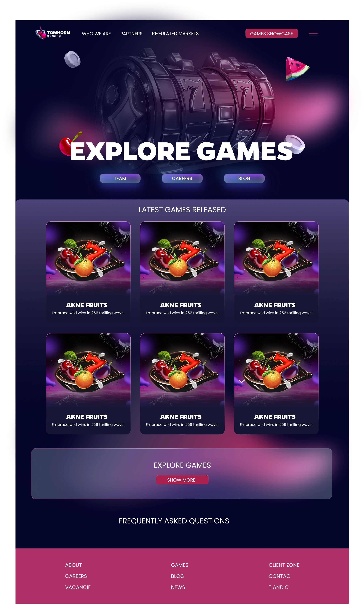
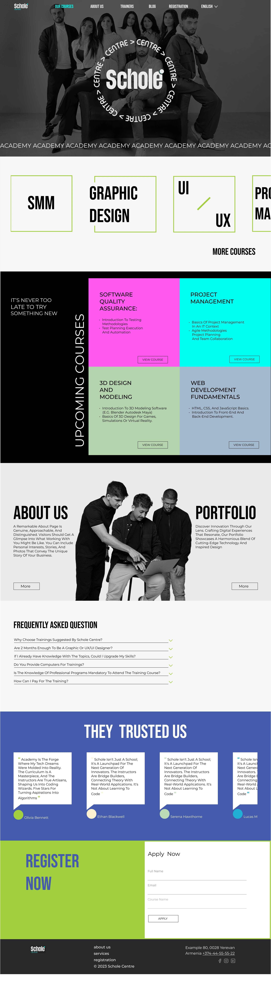

Portfolio of Madlen Sargsyan
Thoughtful interfaces.
A bold visual eye.
UI/UX · Graphic design
I’m a UI/UX designer with a graphic design background and experience in iGaming. I care about interfaces that are clear to use and memorable to look at, whatever the industry.
Selected work
(03)Tom Horn Gaming
Website redesign aligned with a new brandbook and logo, on desktop and mobile.
iGaming · Website redesign · 2024
Read the case study

Schole Centre website
A new website for an educational centre offering classes and courses, on desktop and mobile.
Education · New website · 2024
Read the case studyYandex Travel — Travel Summary
Discovery Research · Prototyping · Usability Testing · 2026
Interviews and usability tests on a trip-recap concept, and the prototype I designed to test it.
Educational project for Yandex Practicum; not commissioned by Yandex and not launched.
Read the case studyAbout
Interface & image.
UI/UX design shaped by a graphic design background, with experience in iGaming.
Case study · iGaming
Tom Horn Gaming
Overview
I worked on the Tom Horn Gaming website redesign at the agency where I was employed. The goal was to modernize the website and align it with the new brandbook and logo we created.
The screens below cover the games catalogue, company story, content partners, regulated markets and a blog, for desktop and mobile.
My role
I was the UI/UX designer, responsible for wireframes, desktop and mobile UI design, prototypes and developer handoff.
I worked in Figma, together with an art director, a project manager and a developer.
The challenge
To modernize the Tom Horn Gaming website and bring it in line with the new brandbook and logo.
Design decisions & final screens
The aim throughout was to translate the new brand identity into a consistent website experience.
Select any screen to enlarge it.
Desktop homepage: alternative concepts
Three alternative hero concepts for the desktop homepage share one structure: header navigation with a “Games showcase” button, a hero, a “Latest games released” grid, an “Explore games” call-to-action, an FAQ and a footer. They differ in the hero: a 3D slot reel, a bear character and a “Cyber Casino” illustration.
Mobile homepage
The mobile homepage stacks a hero with a “Get in touch” button, keyword search with game-type and category filters, horizontally scrolling rows for latest, new and popular games, news cards, an FAQ accordion and a footer with newsletter sign-up.
Games
The games screens combine search and filters with browsable rows, then an all-games grid with pagination and a “More games” link. The second screen shows a paginated grid with “Top” badges on game tiles.
About
The about screen opens with “Our mission and value”, then a timeline card, an achievements card, “Looking ahead” cards and an “All jobs” call-to-action.
Content network
This screen introduces the content offer with a short intro, a grid of icon benefits, a content-partners logo carousel and “Get in touch” calls-to-action.
Regulated markets
This screen presents a responsible-gaming statement, licence logos, a scrolling row of market flags, success stories and a closing “Explore games” call-to-action.
Blog
The blog screen offers keyword search, a categories filter and a two-column grid of article cards with “Read more” links and pagination.
Case study · Education
Schole Centre website
Overview
A new website for my agency’s second branch, an educational centre offering classes and courses.
My role
I was the UI/UX designer. I worked in Figma and collaborated with graphic designers and a developer.
The logo was created by a graphic designer, and I selected the website’s colour palette. The photography is not my work.
Goals
To help visitors explore courses, learn about trainers and register for classes.
The challenge
To present course information clearly while creating an engaging experience across desktop and mobile.
Design decisions & final screens
Course tiles help visitors compare options, and Online/Offline labels clarify the learning format. Registration forms provide convenient sign-up points, while trainer pages introduce the instructors.
Select any screen to enlarge it. Text in the screens is placeholder content.
Homepage
The homepage introduces the centre with a hero, scrolling course tiles, an upcoming-courses grid, About and Portfolio entry points, an FAQ and a registration form. On mobile, the course tiles become a vertical list of full-width buttons.
Courses
Course tiles help visitors compare options, and Online/Offline labels clarify the learning format. A “Join midway” banner sits above the tiles, and a registration form closes the page.
Trainers
Trainer pages introduce the instructors. The trainers page shows each one with a portrait, name, subject and a “View course” link; on mobile, a trainer profile adds a Schedule button and the registration form.
Course page
Each course page brings the description, format, duration and price together with the trainer’s profile, students’ portfolios and a registration form, so visitors can sign up from the place where they decide.
About
The About page presents the centre’s mission and vision, followed by a row of what visitors can expect from it.
Blog
The blog opens with a featured article, followed by a grid of article cards and a “Read more” link.
Animation walkthrough
A screen recording of the website animations I created to make the experience more creative and engaging.
Case study · UX research
Yandex Travel — Travel Summary
Educational project for Yandex Practicum; not commissioned by Yandex and not launched.
Overview
Travel Summary is a concept for Yandex Travel: a recap of a finished trip that a traveller can review, customise and send to someone else.
The project had two phases: discovery interviews to understand what travellers want from a trip recap, and moderated usability tests of a prototype I designed.
Research goals
Discovery: to understand which memories, facts and visual formats make a trip summary valuable, and what motivates people to share it.
Usability: to check how clear and easy the Travel Summary prototype is to use, and to find its problem areas.
My role
I completed all stages myself: recruiting participants, conducting discovery interviews and usability tests, analysing the findings, creating the persona and journey map, designing the Figma prototype and writing the reports.
I received feedback from a Yandex Practicum reviewer.
Methods
Discovery: 3 individual semi-structured interviews with travellers aged 26–33 who had travelled in the previous 6–12 months and planned trips with travel services. The interviews covered how people save memories, their view of automatic summaries, sharing and privacy.
Usability: moderated online tests of the interactive prototype with 4 participants aged 25–33 who travel from once a year to several times a year. Participants worked through the tasks on their own during a video call, while I observed their path, errors, backtracking and hesitation and asked neutral follow-up questions without hinting at the right path. Five sessions were planned; 4 were completed.
The two samples are reported separately. I don’t claim a total number of unique participants.
Discovery findings
The hypothesis
Users would be interested in a visual, emotional trip summary and be motivated to share it.
Verdict: partially confirmed. Interest in a personal summary was clear, but sharing was not the main value for everyone.
What I observed
- All 3 participants save trip materials and return to them. They value the summary as a personal archive.
- 2 of 3 reacted positively to well-made automatic collections. One said random or blurry frames spoil them. The third valued a structured summary and a convenient archive.
- All 3 want control before sending, through preview, editing, hiding personal details or choosing what to share.
- Sharing habits differ: one participant rarely posts memories publicly, one shares only part of a trip, and one wants to send individual blocks.
- One participant said they like an overview that isn’t too long.
- Personal achievements and statistics got no repeated request, so there is not enough data to treat them as central.
In their words
Yes, it’s needed. Maybe I’m sending something else and won’t notice a mistake.Participant 2 · translated from Russian
Some videos I make specifically for social media, and some I keep for myself.Participant 3 · translated from Russian
Synthesised persona
A pattern summary built from the 3 discovery interviews. It is not a description of one real person.
Segment
A traveller who saves memories and shares them selectively
Context
After a trip, photos, videos and other materials remain. The person returns to them now and then, on their own or through automatic Memories.
Behaviour patterns
- Saves digital trip materials
- Returns to past memories
- Uses a smartphone as the main tool
- Shares selectively, not everything
Drivers
- Keep emotionally important moments
- Get back to a past trip quickly
- Get a beautiful summary without long manual work
- See an unexpected but relevant collection
- Share what matters with loved ones
Barriers
- Chaos and manual searching through materials
- Random or irrelevant content
- The risk of showing something personal
- A summary that is too long
- Extra manual preparation before sharing
Key need
Keep the trip in a convenient form for myself, and have full control over what I share with others.
A synthesised statement, not a quote from one participant.Journey map
Common patterns across the 3 interviews, with touchpoints for each stage. The opportunities are my proposals and haven’t been tested.
Actions
Saves photos, videos, notes or other keepsakes.
Goal
Keep the important moments.
Touchpoints
Camera, phone gallery, notes; one participant also keeps souvenirs.
Barriers
Materials can stay unstructured.
Opportunity · proposed
Collect trip materials automatically.
Actions
Looks through photos and Memories and goes back to a past trip.
Goal
Quickly recall the trip and its details.
Touchpoints
Gallery, Google Photos, iPhone Memories.
Barriers
Finding things depends on how well the context was saved.
Opportunity · proposed
Keep past trips as a convenient personal archive.
Actions
Looks at automatically assembled moments, places and trip context.
Goal
Get a short, interesting summary.
Touchpoints
Automatic Memories today; potentially Travel Summary in Yandex Travel.
Barriers
Random frames or an overly long selection reduce its value.
Opportunity · proposed
Show a short personal summary, with details on demand.
Actions
Checks the content, edits it and decides what stays private.
Goal
Control what another person will see.
Touchpoints
Gallery or editor, privacy settings, Preview.
Barriers
Risk of showing too much; needs control and a clear preview.
Opportunity · proposed
Provide Edit, Privacy and an accurate Preview.
Actions
Shows or sends selected materials to loved ones or on social media.
Goal
Share only what really matters.
Touchpoints
Instagram, messengers, native share; sometimes showing it in person from the phone.
Barriers
Doesn’t want to send the whole summary; sharing should be selective.
Opportunity · proposed
Offer a choice: the whole summary or individual blocks.
Implications
- Sharing should be optional and modular: save for yourself, show it to someone close, or send part or all of the summary.
- Preview, Edit and Privacy belong in the core flow.
- A short first-level summary should open into details on demand.
The tested prototype
I designed an interactive Figma prototype of the Travel Summary sharing flow. The discovery findings informed it, including Preview, Edit and Privacy. This is the prototype I tested with participants.
- An entry block on the Yandex Travel home screen announcing that the results are ready
- A summary screen with cards for expenses, visited places, trip moments, transport and route
- Editing, with privacy toggles
- A preview
- Sharing through the standard iOS share menu, then a confirmation
These are the screens as designed in Figma, with the original Russian interface text, uncropped. Click any screen to enlarge. Proposed improvements are not shown here; they are described under the recommendations.
My design decision: the “Итоги готовы” card.
The Yandex Travel home screen as it already exists; I did not redesign it. My design decision is the “Итоги готовы” (Results ready) card in the Cities row, which opens the Travel Summary.
Discovery connection: participants returned to past trips and wanted a quick way back to them.
The generated summary: expenses, number of places, photos and video, duration, transport and route. “Настроить итоги” (Customise summary) leads to editing; “Поделиться” (Share) goes straight to sharing.
Discovery connection: participants wanted a beautiful summary without long manual work.
Distance by transport type (plane, taxi, metro, walking, bus) with a total of 59 movements. The “Места” (Places) tab sits beside it.
Usability connection: distance labels and route information needed clarification.
Photos and videos for the trip, filtered by “Все / Фото / Видео” (All / Photo / Video) and shown under date-range headings, with a “+20” tile for the rest of each group.
Usability connection: two participants also wanted photos grouped by day or location in the Trip Moments section.
The “Редактирование” (Edit) tab. “Настройки приватности” (Privacy settings) has one toggle each for expenses, dates, route and exact locations, with the hint “Switch on the data the recipient will see.” Here all four are on.
Discovery connection: participants wanted control over what another person sees; Edit and Privacy came from that.
The “Предпросмотр” (Preview) tab, labelled “This is how the recipient will see your summary.” It is the last check before “Поделиться” (Share).
Usability connection: this is where, in 3 of 4 sessions, data that participants had hidden still appeared. See the central finding below.
After “Поделиться” the standard iOS share menu opens, with contacts and apps. Its names, title and contacts are sample content from the iOS component, not real data.
Discovery connection: participants shared through messengers and the native share menu.
“Успешно” (Success): “Ваши воспоминания успешно отправлены” (Your memories have been sent successfully), with a “Готово” (Done) button that closes the flow.
Usability findings
Privacy and trust
In 3 of 4 sessions, data that participants had hidden still appeared in the preview and the final summary. Participants generally understood the privacy toggles. The problem came afterwards: the preview didn’t reflect their choices, so they couldn’t check what the recipient would see.
That matters because a person could send something they believe is hidden, which undermines trust in the whole sharing feature.
Also observed
- The main flow works. All 4 participants completed the sharing flow. They found the main sections, returned to the overview, found editing and privacy settings, and chose a sending method without serious difficulty. Where manual expense entry was tested, 3 of 3 participants understood how it works.
- Distance labels and numbers needed clarification. One participant read “500 km” as the distance to a single place, not the total. One participant didn’t immediately understand the places count. For three participants, their understanding of the distances shown next to each transport type could not be confirmed and needed clarification.
- Route: Route discovery was confirmed in two sessions; evidence from the other two was insufficient.
- Photos: two participants wanted photos grouped, one by place and one by day and place.
- Single comments: one participant said they wouldn’t realistically enter every expense during a trip, and one wanted to add restaurants and natural places manually.
Prioritised recommendations
These suggestions are based on the observations above. They have not been implemented or retested.
Limitations and next steps
- Small samples. 3 discovery interviews and 4 of 5 planned usability sessions completed. The findings are qualitative and aren’t statistically representative.
- Discovery participants. All three worked in creative fields, so they don’t represent the full Yandex Travel audience.
- Uneven coverage. Topics were discussed in different depth, and not every task was assessed with every participant. The route, for example, was confirmed in only two sessions.
- Quotes. One discovery interview has no verbatim transcript, so it has no quote. The usability reports contain no verbatim transcripts, so there are no usability quotes.
- Counts. Usability counts are taken from my final usability report.
- Not retested. The recommendations are untested.
Next steps: fix the privacy, number-label and route issues, then run a short retest with new participants. The retest would check that:
- a hidden card really disappears from the preview and the sent version
- participants can explain “500 km” and the other figures without prompting
- participants can find the route directly
- participants find manual expense entry quick enough
The discovery patterns would also be worth checking with a wider audience.